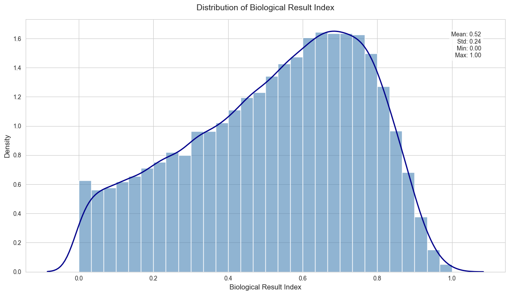
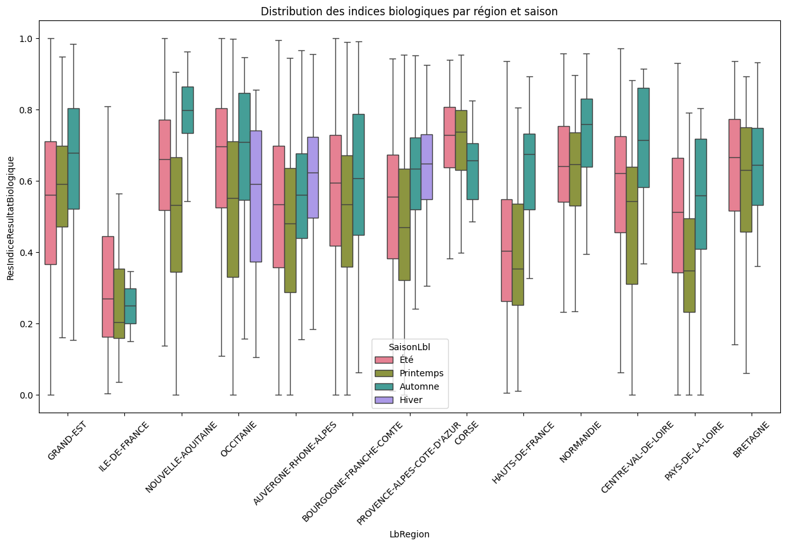
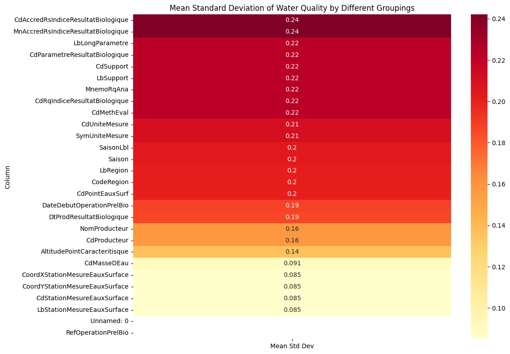
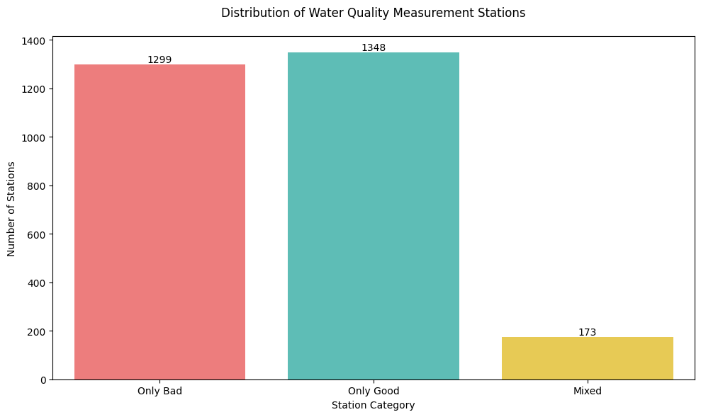
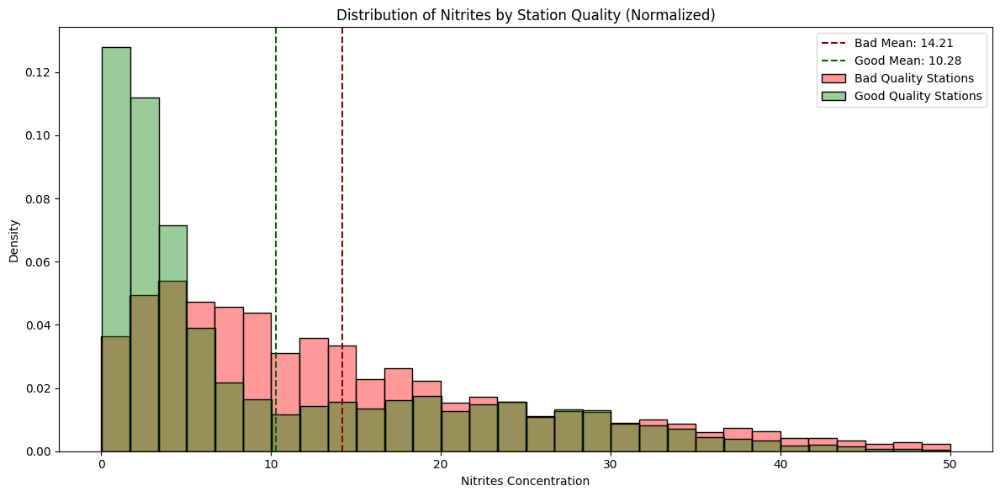
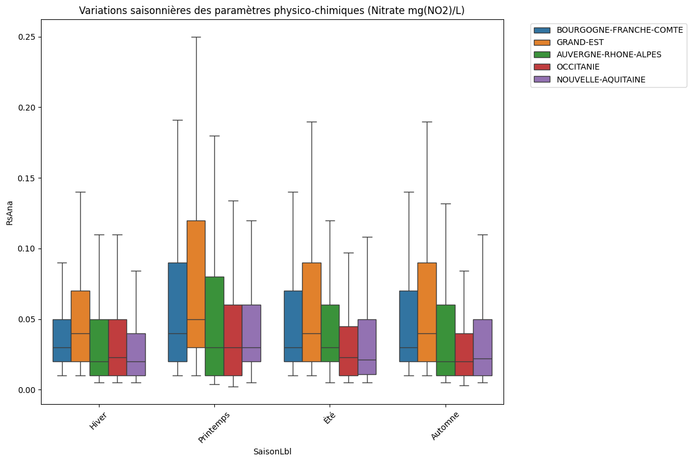

La problématique est la suivante :
Quel lien peut-on établir entre la physico-chimie de l'eau et son état biologique ?
Cette question est fondamentale pour la gestion et la préservation de nos ressources en eau. La qualité biologique de l'eau, qui reflète la santé des écosystèmes aquatiques, est influencée par de nombreux paramètres physico-chimiques. Comprendre ces relations est essentiel pour :
Pour répondre à cette problématique, nous allons :
Cette étude s'appuie sur un vaste jeu de données collectées à travers la France, comprenant des mesures régulières de paramètres physico-chimiques (température, pH, nitrates, etc.) et des évaluations de la qualité biologique des cours d'eau.
Nous disposons notamment de deux bases de données de faits :
Une base contenant des mesures physico-chimiques de l'eau, relevées à des dates et stations spécifiques, on retrouve notamment les variables suivantes de la plus représentée à la moins représentée :
Une base contenant des mesures de qualité biologique de l'eau, relevées à des dates et stations spécifiques
[!NOTE]
La qualité biologique de l'eau est un indice entre 0 et 1, 0 étant une eau de mauvaise qualité et 1 une eau de bonne qualité.

On observe que la distribution des indices de qualité de l'eau en France présente une forme légèrement asymétrique, avec une moyenne de 0,52 et une concentration plus importante des valeurs autour de 0,7. Cette répartition, s'étendant de 0 à 1, suggère une qualité de l'eau globalement moyenne à bonne sur l'ensemble du territoire, bien qu'une certaine variabilité soit observée (écart-type de 0,24).
[!TIP]
Quels facteurs influencent la qualité de l'eau ?
Avant de nous lancer de l'analyse des données physico-chimiques, observons les données groupées par région et par saison.

On remarque que la qualité de l'eau est :
La qualité de l'eau est influencée par la saison et la région de manière significative. Maintenant, intéressons-nous aux variables physico-chimiques.
Nous disposons de mesure de qualité de l'eau entre 1 et 16 fois par station, lorsqu'il y a plusieurs mesures elles sont prises à des dates différentes.
Voyons si les indices de qualité de l'eau sont similaires pour une même station.
grouped_std = df_hydrobio_merged.groupby("CdMethEval")["ResIndiceResultatBiologique"].std()
grouped_std.mean()
On trouve une deviation standard moyenne de 0.085 ce qui est largement plus faible que 0.241, la deviation standard de la distribution des indices de qualité de l'eau en France.
On en conclut que les indices de qualité de l'eau ne vont pas beaucoup changer pour une même station en général.
Est ce que cela est extensible aux mesures faites dans les mêmes étendues d'eau ?

Oui, on observe une faible variabilité des indices de qualité de l'eau pour une même station et une même étendue d'eau 0.091
On va donc comparer les impacts des variables physico-chimiques sur la qualité de l'eau en moyennant les indices de qualité de l'eau pour une même station.
On divise les stations en deux groupes :

On remarque que meme si des mesures ont été prises à des dates différentes, les stations rentrent plutot bien dans un des deux groupes. Il n'y a que 6.5% des stations sur lesquelles il y a eu un indice que qualité biologique > 0.7 et < 0.4

[!NOTE]
La limite acceptable pour que l'eau reste potable est de 50 mg/L de nitrate.
On remarque une large partie des stations qui ont un indice de nitrate moyen inférieur à 10 mg/L sont de bonne qualité.
Cependant beaucoup de stations avec un très fort indice de nitrate sont tout de même de bonne qualité.

On peut expliquer cela par la saisonalité des mesures. En printempts les concentrations en nitrates explosent, notamment pour le Grand Est qui se retrouve avec des valeurs extremes largement plus élevées que les autres régions.
[!TIP]
On peut conclure que le nitrate est un bon indicateur de la qualité de l'eau. Notamment parce que les bactéries s'en nourrissent. Cependant ce n'est pas le seul facteur influant sur la qualité de l'eau, il faudra ajouter d'autres variables physico-chimiques pour prédire la qualité de l'eau avec une meilleure précision.
Nous avons un problème. Nous disposons de mesures de qualité de l'eau, de température, de pH, de conductivité, d'oxygène dissous, etc. Mais tout cela à des dates différentes et parfois très éloignées.
Par exemple pour la station 6215800 on a des mesures de qualité en chaque année en février mais des mesures de nitrate et de la plupart des autres variables tous les deux mois.
[!TIP]
Comment rendre les données ingérables par un modèle de machine learning ?
On choisit de créer un dataframe pour notre entrainement de machine learning à partir des données qu'on a, on va garder une mesure de qualité de l'eau par station (la plus récente) et l'associer à une mesure de chaque type (nitrate, température, etc.).
On calcule cette valeur physique ou chimique en faisant une moyenne des mesures faites dans l'année précédant la mesure de qualité.
df_training_with_new_col = df_training_with_new_col[
(df_training_with_new_col["date_diff"] >= 0)
& (df_training_with_new_col["date_diff"] <= 365)
]
# Group by station and take the mean of measurements
df_grouped = df_training_with_new_col.groupby("CdStationMesureEauxSurface").agg(
{
"DateDebutOperationPrelBio": "first",
"ResIndiceResultatBiologique": "first",
"RsAna": "last",
}
)
On rajoute quelques infos qui sont pertinentes d'après notre analyse exploratoire :
Et on
On se retrouve avec un data frame de la forme :
| CdStationMesureEauxSurface | DateDebutOperationPrelBio | ResIndiceResultatBiologique | CodeRegion | Saison | Température de l'Eau | Potentiel en Hydrogène (pH) | Conductivité à 25°C | Oxygène dissous | Taux de saturation en oxygène | Demande Biochimique en oxygène en 5 jours (D.B.O.5) | Phosphore total | Turbidité Formazine Néphélométrique | Matières en suspension | Azote Kjeldahl | Diuron | Carbone Organique | Ammonium | Nitrites | Nitrates | Orthophosphates (PO4) |
|---|---|---|---|---|---|---|---|---|---|---|---|---|---|---|---|---|---|---|---|---|
| 6175517 | 2022-10-11 | 0.9180 | 76.0 | 4 | 4.7 | 7.3 | 64.0 | 11.1 | 102.0 | 0.6 | 0.005 | 3.2 | 2.2 | 0.55 | 0.005 | 0.82 | 0.010 | 0.01 | 0.55 | 0.01 |
| 6175400 | 2022-10-10 | 0.8210 | 76.0 | 4 | 11.6 | 6.8 | 40.0 | 9.2 | 103.0 | 0.5 | 0.006 | 1.9 | 3.3 | 0.50 | 0.005 | 3.80 | 0.010 | 0.01 | 0.58 | 0.03 |
| 5236100 | 2022-09-30 | 0.8007 | 76.0 | 3 | 6.4 | 8.1 | 201.0 | 11.8 | 102.0 | 1.0 | 0.011 | 3.3 | 6.5 | 0.50 | 0.020 | 0.94 | 0.023 | 0.01 | 2.70 | 0.02 |
| 4103500 | 2022-09-29 | 0.4296 | 24.0 | 3 | 9.6 | 8.3 | 654.0 | 10.3 | 88.7 | 0.9 | 0.131 | 20.0 | 22.0 | 0.90 | 0.005 | 5.60 | 0.430 | 0.14 | 12.00 | 0.29 |
| 6710020 | 2022-09-29 | 0.5330 | 93.0 | 3 | 23.3 | 8.2 | 1207.0 | 8.6 | 104.0 | 0.5 | 0.089 | 130.0 | 223.0 | 0.50 | 0.005 | 0.35 | 0.010 | 0.01 | 1.00 | 0.29 |
L'objectif est de prédire l'indice biologique en utilisant les variables du dataframe (à l'exception de la date et de l'identifiant de la station).
Après avoir effectué plusieurs tests et optimisé les hyperparamètres, nous avons comparé les performances de 7 modèles de régression différents en utilisant une validation croisée à 5 plis. Voici les résultats obtenus :
| Model | RMSE (± std) | R² (± std) |
|---|---|---|
| Ridge | 0.20 ± 0.01 | 0.20 ± 0.09 |
| Lasso | 0.23 ± 0.01 | -0.09 ± 0.08 |
| ElasticNet | 0.23 ± 0.01 | -0.09 ± 0.08 |
| SVR | 0.18 ± 0.02 | 0.34 ± 0.08 |
| RandomForest | 0.17 ± 0.01 | 0.40 ± 0.06 |
| CatBoost | 0.18 ± 0.02 | 0.38 ± 0.08 |
| GradientBoosting | 0.17 ± 0.02 | 0.41 ± 0.08 |
Le random forest et le Gradient Boosting sont les modèles qui donnent les meilleurs résultats.
Voici quelques exemples de prédictions sur le jeu de test :
| Nitrates | Temperature | Conductivity | Oxygen | Actual | Predicted |
|---|---|---|---|---|---|
| 1.5 | 9.9 | 44.0 | 9.5 | 0.7943 | 0.7492 |
| 3.3 | 15.8 | 459.0 | 11.2 | 0.5590 | 0.6211 |
| 15.0 | 13.9 | 257.0 | 8.8 | 0.2537 | 0.3224 |
| 11.6 | 16.9 | 461.0 | 9.3 | 0.7100 | 0.6836 |
| 2.8 | 15.9 | 54.0 | 9.5 | 0.8734 | 0.6724 |
[!TIP]
Le modèle capture la tendance générale des indices biologiques avec des prédictions proches des valeurs réelles, mais garde une marge d'erreur notable (ex: indice réel 0.8734 prédit à 0.6724).
Nous avons pu établir un lien entre la physico-chimie de l'eau et son état biologique en utilisant des données de qualité de l'eau et des mesures physico-chimiques. Nous avons montré que certaines variables, comme les nitrates, peuvent être de bons indicateurs de la qualité de l'eau, mais que d'autres facteurs doivent également être pris en compte pour prédire avec précision l'indice biologique.
Nous avons également développé un modèle de machine learning capable de prédire l'indice biologique en fonction des variables physico-chimiques, avec des performances satisfaisantes. Cepend avec une marge d'erreur non négligeable.
On peut améliorer ce modèle en créant plus d'une donnée par station. Cela est faisable en prenant en compte chaque valeur d'indice de qualité biologique de l'eau et de créer une ligne avec les valeurs physico-chimiques moyennées sur les 365 jours précédents.
La différence est que nous ne prenions que la dernière valeur d'indice de qualité biologique de l'eau pour chaque station. Ce qui nous laissait avec un jeu de données relativement petit (3000 lignes) par rapport à l'original